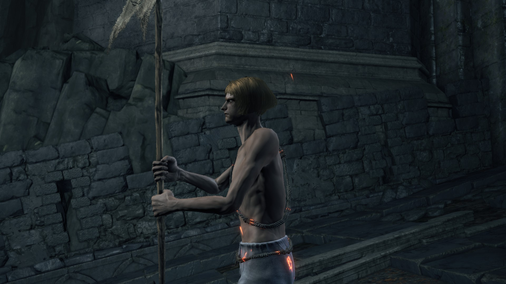
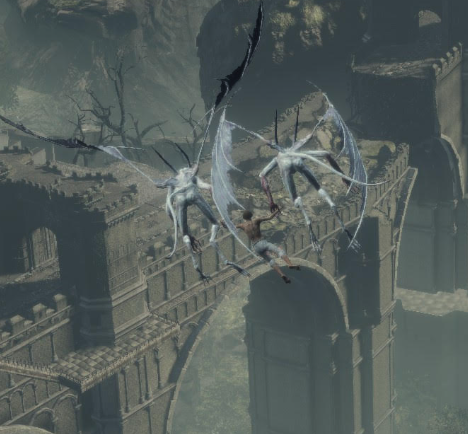
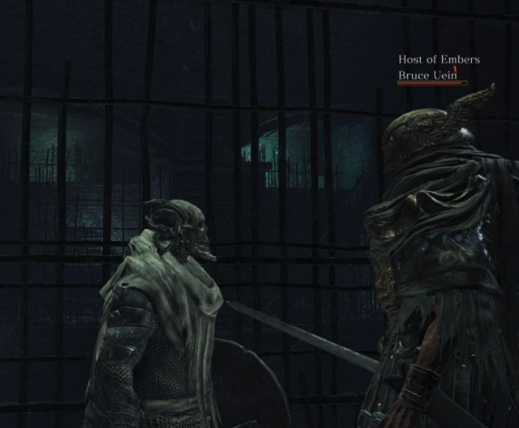
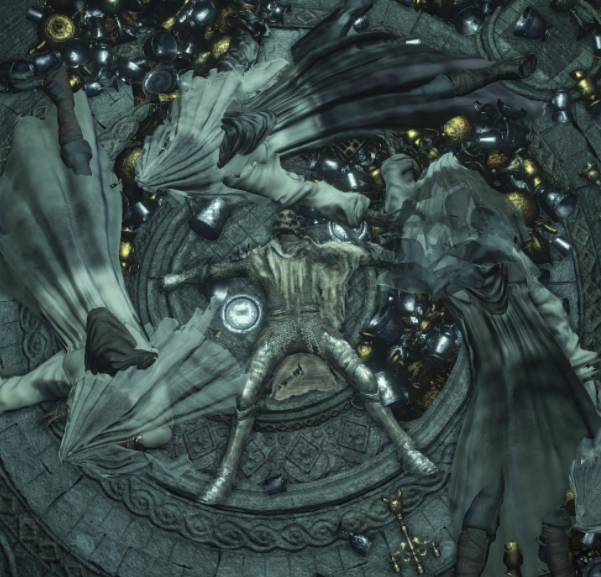
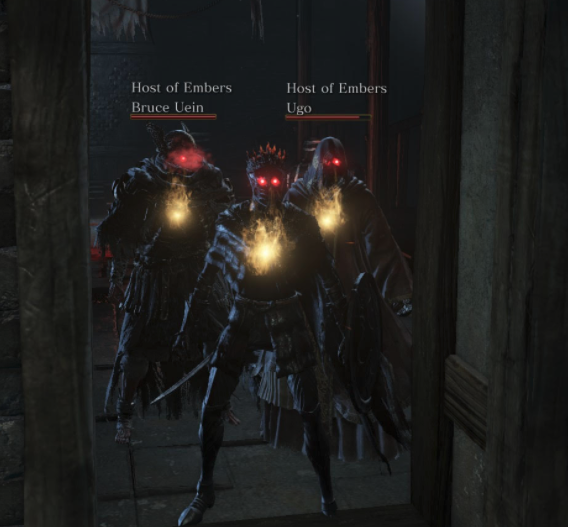

Cinders is a Dark Souls 3 mod that aims to provide a fresh experience to gameplay, with new feature added to further enhance replayability. These features include unique game modes, non-linear progression, enemy and bosses with adjusted stats and placements, new bosses, NPCs, classes, weapons, armor sets, and more!

Features Breakdown

Weapons and armor from previous soulsborne titles have been added. Adjusted scaling and weapon art ensures a greater selection of viable builds for players.

New (optional) bosses with intricate movesets crafted from enemies across the soulsborne titles provides players new challenges to overcome.

Additional starting classes let you choose the exact playstyle you want from the start, and starting gifts have been modified to further aid the early-game grind.

NPCs have new offerings and a cast of new, original NPCs have been placed throughout, giving players new quests, items and game modes to explore.
"Oh, dear, another dogged contender. Welcome, Unkindled One, purloiner of Cinders. Mind you, the mantle of Lord interests me none. The fire linking curse, the legacy of lords, let it all fade into nothing."
-Prince Lothric
Join Our Community
Join our discord server for updates on new release builds and all things Cinders!